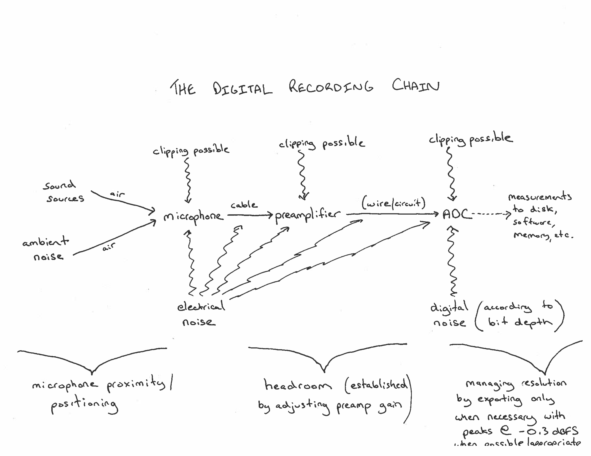

MEDIAART 2G03: The digital recording chain
The diagram below shows a typical chain of connections when someone makes a recording with digital recording hardware (such as a field recorder, or a microphone or microphones connected to an audio interface). Sometimes these connections are not completely visible because they are hidden inside a single device, but even when the connections are completely hidden, this is still basically always how digital audio recording works.

-
Source + Air: The chain starts with a sound source (or rather, sound sources) somewhere that is/are making air molecules vibrate. Those vibrations travel through the air, as air pressure waves, in a similar way to how ripples in a pond of water spread out when a stone is thrown in. In practice, in real-world situations, including controlled spaces like recording studios, there are always multiple sound sources generating vibrations (but not necessarily with the same power or intensity).
-
Microphone: Those air pressure waves arrive at a microphone. A microphone is one example of a “transducer”, which means something that converts energy or vibrations in one medium into energy or vibations in another medium. A microphone is a device that transduces acoustic energy (from air pressure waves) into electrical energy (voltage).
-
Preamplifier: The voltage that the microphone itself produces is usually very, very small (for example: ranging between –0.001 and 0.001 volts). For this reason, the next step in the chain is that this tiny voltage goes into a preamplifier, which is an electrical circuit that makes the tiny voltages from the microphone into somewhat larger voltages (for example: ranging between –1 and 1 volts). Keeping in mind that those are rough figures, that’s about a thousand times larger, or +60 dB of “gain”! There are couple of reasons it’s necessary to make the tiny signal from the microphone larger: (1) the larger signal will be less vulnerable to noise introduced by random (or not random) radio interference in the environment, and also less vulnerable to other small, random noise inherent in the electronics themselves; and (2) the larger signal will be easier to sense/measure in the next stage.
The preamplifier is usually under our control. Many recording devices will have something called “gain” or “recording level” or perhaps other names. What such controls do is to change how much amplifying the preamplifier does, in order to influence how large the resulting electrical signal is. Setting the gain/recording level, or in other words, controlling exactly how much bigger the signal from the microphone is going to be made, is an important parameter to learn to control.
- ADC: After the preamplifier, the larger electrical voltage goes into a circuit called an “analog to digital converter” or ADC (often pronounced “eh-dack”). The ADC is another kind of transducer – one that converts electrical voltage into a series of numerical measurements of how high or low that voltage is. The ADC has a fixed range – a fixed, maximum distance from 0V that it can measure. If the voltage goes beyond that range (above the maximum positive voltage, or below the minimum negative voltage) it will just measure that as being the maximum or minimum. In other words, it will clip – and that sonic information about the shape of the vibrations, when they were out of range, will forever be lost. This is why the preceding stage, the preamplifier, has a gain/recording level control: as a way of adjusting things so that the signal received by the ADC falls nicely inside its range of measurement. I’ll have more to say about what I mean by “falls nicely inside the range” in other modules.
After the ADC, what happens next depends on what kind of device we are using. If we’re using a field recorder (or a smartphone), probably what happens is that all of those numerical measurements of the signal are stored in a file on an SD card or other storage medium. If we’re working with an audio interface connected to a computer, then software, such as a digital audio workstation (DAW), receives the measurements and does whatever its going to do with them (if we are recording, that might involve storing all those measurements in a WAV file that is created as we record).